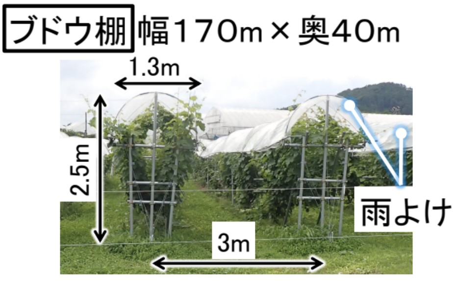

Project Background
なぜ、「雨」との戦いに
なぜ、「雨」との戦いに
技術が必要なのか？
岩手県大迫町は、日本有数のワイン用ブドウ産地として知られています。しかし、近年の気候変動による不定期な豪雨は、ブドウに深刻な病気（ベト病など）をもたらし、その品質を脅かしています。
現場の課題
農家の方々は「雨が降るたびに広大な畑を走り回り、手動でビニールを閉める」という過酷な労働を強いられています。深夜でも、早朝でも、雨は待ってくれません。
「技術で、農家の睡眠時間とワインの品質を守りたい。」
それが、私たちが開発を始めた原点です。高価な既製品ではなく、Raspberry Piと3Dプリンタを駆使した「安価で、修理しやすく、現場に寄り添った」独自の自動化ソリューションを目指しました。

TARGET FIELD
Ohasama, Iwate
Wine Grape Production Area